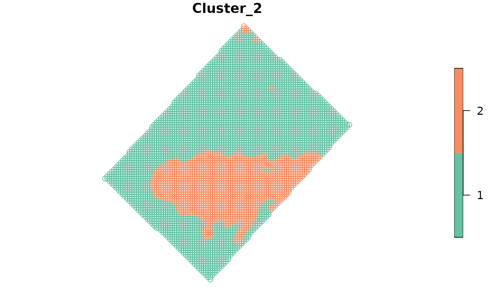

MULTISPATI-PCA clustering
Usage
kmspc(
data,
variables,
number_cluster = 3:5,
explainedVariance = 70,
ldist = 0,
udist = 40,
center = TRUE,
fuzzyness = 1.2,
distance = "euclidean",
zero.policy = FALSE,
only_spca_results = TRUE,
all_results = FALSE
)Arguments
- data
sf object
- variables
variables to use for clustering, if missing, all numeric variables will be used
- number_cluster
numericvector with number of final clusters- explainedVariance
numericnumber in percentage of explained variance from PCA analysis to keep and make cluster process- ldist
numericlower distance bound to identify neighbors- udist
numericupper distance bound to identify neighbors- center
a logical or numeric value, centring option if TRUE, centring by the mean if FALSE no centring if a numeric vector, its length must be equal to the number of columns of the data frame df and gives the decentring
- fuzzyness
A number greater than 1 giving the degree of fuzzification.
- distance
characterMust be one of the following: If "euclidean", the mean square error, if "manhattan", the mean absolute error is computed. Abbreviations are also accepted.- zero.policy
default NULL, use global option value; if FALSE stop with error for any empty neighbors sets, if TRUE permit the weights list to be formed with zero-length weights vectors
- only_spca_results
logical; should return both PCA and sPCA results (FALSE), or only sPCA results (TRUE)? This can be a time consuming process if there are multiple variables.- all_results
logical; should return the results from the sPCA and PCA call?
Examples
library(sf)
data(wheat, package = 'paar')
# Transform the data.frame into a sf object
wheat_sf <- st_as_sf(wheat,
coords = c('x', 'y'),
crs = 32720)
# Run the kmspc function
kmspc_results <- kmspc(wheat_sf,
number_cluster = 2:4)
#> Warning: All numeric Variables will be used to make clusters
# Print the summaryResults
kmspc_results$summaryResults
#> Clusters Iterations SSDW
#> 1 2 18 1.8713082
#> 2 3 56 1.3057409
#> 3 4 23 0.9948927
# Print the indices
kmspc_results$indices
#> Num. Cluster Xie Beni Partition Coefficient Entropy of Partition
#> 1 2 3.520996e-05 0.9611975 0.06490128
#> 2 3 5.479347e-05 0.9391130 0.10430426
#> 3 4 5.827060e-05 0.9293032 0.12351250
#> Summary Index
#> 1 1.281105
#> 2 1.597481
#> 3 1.713107
# Print the cluster
head(kmspc_results$cluster, 5)
#> Cluster_2 Cluster_3 Cluster_4
#> [1,] "1" "3" "2"
#> [2,] "1" "3" "2"
#> [3,] "1" "3" "2"
#> [4,] "1" "2" "2"
#> [5,] "1" "2" "2"
# Combine the results in a single object
wheat_clustered <- cbind(wheat_sf, kmspc_results$cluster)
# Plot the results
plot(wheat_clustered[, "Cluster_2"])
